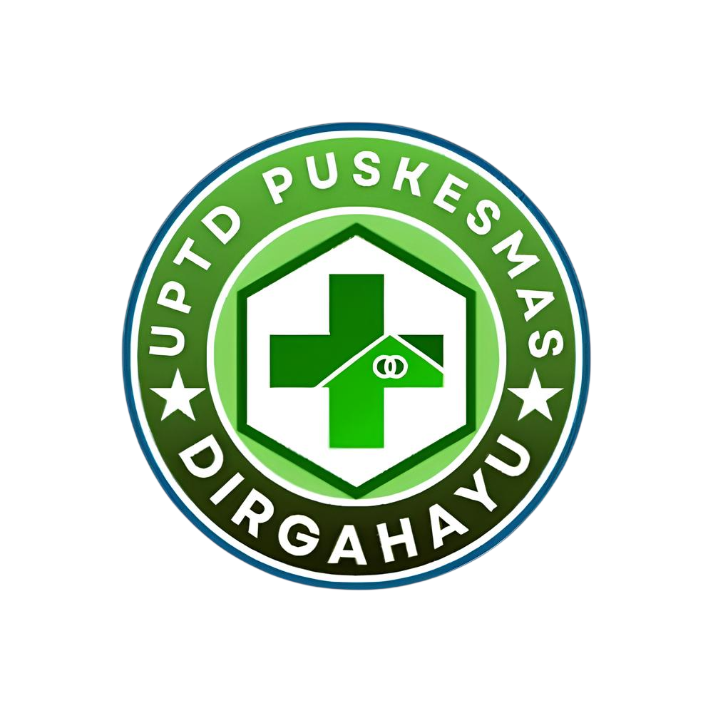
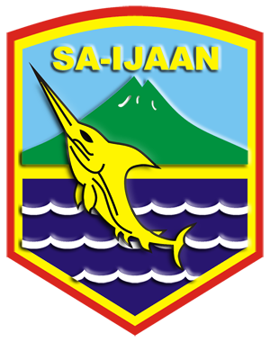

Sistem Informasi Digital & Layanan Terpadu Puskesmas Dirgahayu

“MEWUJUDKAN MASYARAKAT SEHAT KECAMATAN PULAU LAUT UTARA”
Informasi SDM, Jadwal Praktik, dan Tur Virtual fasilitas Puskesmas Dirgahayu.
Self-assessment untuk deteksi dini TBC, HIV, dan Hepatitis secara mandiri.
Kuis kesehatan berpoin dan library video kreatif dari tenaga medis kami.